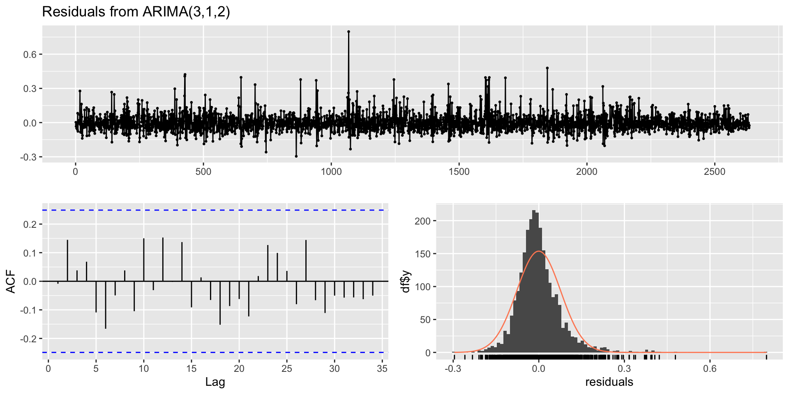

tsfe::indices %>%
select(date,`RUSSELL 2000 - PRICE INDEX`) %>%
rename(r2000=`RUSSELL 2000 - PRICE INDEX`) %>%
drop_na() %>%
tq_transmute(select =r2000,mutate_fun = periodReturn,type='log') ->monthly_r2002r
ts(monthly_r2002r$monthly.returns, start = c(1988,1))->r2000r_m_ts
autoplot(r2000r_m_ts) + ylab("Log returns") + xlab("Year") + labs(title="Figure 2: Monthly log returns of the Russell 2000 Price Index",subtitle =" from March 1988 to December 2019")Time series models
Barry Quinn
<span class=‘glowinline’ Digital Dave
<span class=‘glowinline’ Digital Dave
Learning outcomes
- Stationary and differencing
- Modelling stationary time series
- ARIMA models (liner model)
- Categories of algorithms in capital markets
- Algorithmic ARIMA modelling
- Practical example with some of the project data
Stationarity and differencing
- The foundation of statistical inference in time series analysis is the concept of weak stationarity.
- roughly horizontal
- constant variance
- no patterns predictable in the long-term
Are these financial time series stationary?
Inference and stationarity
- The monthly log returns of Russell 2000 index vary around zero over time.
- If we divide up the data into subperiods we would expect each sample mean to be roughly zero.
- Furthermore, expect the recent financial crisis (2007-2009), the log returns range is approximately [-0.2,0.2].
- Statistically, the mean and the variance are constant over time OR time invariant.
- Put together these to time invariant properties characterise a weakly stationary series.
Weak stationarity and prediction
- Weak form stationarity provides a basic framework for prediction.
- For the monthly log returns of the Russell 2000 we can predict with reasonable confidence:
- Future monthly returns \(\approx0\) and vary \([-0.2,0.2]\)
Inference and nonstationarity
- Consider quarterly earnings for Carnival Plc.
Inference and nonstationarity
- If the timespan is divided into subperiods the sample mean and variance for each period show increasing pattern.
- Earnings are not weakly stationary.
- There does exist models and methods for modelling such nonstationary series.
Is the VIX time series Stationary?
Non-stationarity in the mean
Identifying non-stationary series:
time plot.
The ACF of stationary data drops to zero relatively quickly
The ACF of non-stationary data decreases slowly.
For non-stationary data, the value of \(r_1\) is often large and positive.
Example: FTSE index
ACF
First differencing
ACF after first differencing
Differencing
- Differencing helps to stabilize the mean.
- The differenced series is the change between each observation in the original series: \({y'_t = y_t - y_{t-1}}\).
- The differenced series will have only \(T-1\) values since it is not possible to calculate a difference \(y_1'\) for the first observation.
Financial ratio example
subset using window()
use log() to stablise variation

Seasonally differencing?
Is this now stationary
- Seasonally differenced series is closer to being stationary.
- Remaining non-stationarity can be removed with further first difference.
- If \(y'_t = y_t - y_{t-12}\) denotes seasonally differenced series, then twice-differenced series i
- When both seasonal and first differences are applied
- it makes no difference which is done first the result will be the same.
- If seasonality is strong, we recommend that seasonal differencing be done first because sometimes the resulting series will be stationary and there will be no need for further first difference.
- It is important that if differencing is used, the differences are interpretable.
Interpretation of differencing
first differences are the change between one observation and the next;
seasonal differences are the change between one year to the next.
But taking lag 3 differences for yearly data, for example, results in a model which cannot be sensibly interpreted.
Unit root tests
Statistical tests to determine the required order of differencing
- Augmented Dickey Fuller test: null hypothesis is that the data are non-stationary and non-seasonal.
- Kwiatkowski-Phillips-Schmidt-Shin (KPSS) test: null hypothesis is that the data are stationary and non-seasonal.
- Other tests available for seasonal data.
KPSS test
Automatically selecting differences
Seasonal strength \(F_s = \max\big(0, 1-\frac{\text{Var}(R_t)}{\text{Var}(S_t+R_t)}\big)\)
If \(F_s > 0.64\), do one seasonal difference.
Non-seasonal ARIMA models
Autoregressive models
- When \(y_t\) has a statistically significant lag-1 autocorrelation, the lagged value \(y_{t-1}\) might be a useful in predicting \(y_t\).
- AR(1) model
\[y_{t}= c+\phi_{1}y_{t - 1} + \varepsilon_{t}\]
where \(\varepsilon_t\) is white noise.
This is a simple linear regression with lagged values of \(y_t\) as predictors.
This simple model is widely used in stochastic volatility when \(y_t\) is replaced by its log volatility.
Autoregressive models
More generally, if the \(E(y_{t-1})\) is determined by more than lag-1 we can generalise a AR(1) to an AR(p) model.
\[y_{t}= c+\phi_{1}y_{t - 1}+\phi_{2}y_{t - 2} + \dots +\phi_{p}y_{t - p} + \varepsilon_{t},\] where \(\varepsilon_t\) is white noise.
This is a multiple linear regression with lagged values of \(y_t\) as predictors.
Example of an AR(1) model

Simulating an AR(2)
AR(1) models explained
\[y_{t}=c + \phi_1 y_{t -1}+\varepsilon_{t}\] When \(\phi_1=0\), \(y_t\) is equivalent to White Noise
When \(\phi_1=1\) and \(c=0\), \(y_t\) is equivalent to a Random Walk
When \(\phi_1=1\) and \(c\ne0\), \(y_t\) is equivalent to a Random Walk with drift
When \(\phi_1<0\), \(y_t\) tends to oscillate between positive and negative values.
Moving Average (MA) models
- Moving Average (MA) models:
\[y_{t} =c +\varepsilon_t + \theta_{1}\varepsilon_{t - 1} + \theta_{2}\varepsilon_{t - 2} +\cdots+\theta_{q}\varepsilon_{t - q},\]
where \(\varepsilon_t\) is white noise. - This is a multiple regression with past errors as predictors. Don’t confuse this with moving average smoothing!
Simulated MA model
set.seed(2)
p1<-autoplot(20 + arima.sim(list(ma = 0.8), n = 100)) +
ylab("") + ggtitle(TeX(r'(MA(2) model: $y_t = 20 + \epsilon_t + 0.8 \epsilon_{t-1} ... \epsilon_t \sim N(0,1)$)'))
p2 <- autoplot(arima.sim(list(ma = c(-1, +0.8)), n = 100)) +
ylab("") + ggtitle(TeX(r"(MA(2) model: $y_t = \epsilon_t -\epsilon_{t-1} + 0.8 \epsilon_{t-2} ... \epsilon_t \sim N(0,1)$)"))
gridExtra::grid.arrange(p1,p2,nrow=1)ARIMA models
Autoregressive Integrated Moving Average models
Autoregressive Integrated Moving Average models (ARMA) \[
\begin{align*}
y_{t} = c+ \phi_{1}y_{t - 1} +\cdots +\phi_{p}y_{t-p} \\
\theta_{1}\varepsilon_{t - 1} + \cdots +\theta_{q}\varepsilon_{t-q} +\varepsilon_{t}.
\end{align*}
\]
ARIMA models
- Predictors include both lagged values of \(y_t\) and lagged errors.
- Conditions on coefficients ensure stationarity.
- Conditions on coefficients ensure invertibility.
- Combine ARMA model with differencing.
ARIMA models notation
- ARIMA(p, d, q) model
- AR part: p = order of the autoregressive part
- I part: d = degree of first differencing involved
- MA part: q = order of the moving average part.
- ARIMA(1,1,1) model: \[(y_t-y_{t-1}) =c + \phi_1 (y_{t-1}- y_{t-2}) +\theta_1\varepsilon_{t-1} + \varepsilon_t\]
- These componets are the integrated parts \((y_t-y_{t-1}) \dots (y_{t-1}- y_{t-2})\)
ARIMA models notation
- White noise model: ARIMA(0,0,0)
- Random walk: ARIMA(0,1,0) with no constant
- Random walk with drift: ARIMA(0,1,0) with
constant term - AR(p): ARIMA(p,0,0)
- MA(q): ARIMA(0,0,q)
ARIMA modelling of US consumption
The data
fit an ARIMA(2,0,2)
Call:
arima(x = uschange[, "Consumption"], order = c(2, 0, 2))
Coefficients:
ar1 ar2 ma1 ma2 intercept
1.3908 -0.5813 -1.1800 0.5584 0.7463
s.e. 0.2553 0.2078 0.2381 0.1403 0.0845
sigma^2 estimated as 0.3417: log likelihood = -165.14, aic = 342.28coef <- coefficients(fit)
ar1=round(coef['ar1'],3) %>% unname()
ar2=round(coef['ar2'],3) %>% unname()
intercept = round(coef['intercept'] * (1-coef['ar1'] - coef['ar2']),3) %>% unname()
ma1=round(coef['ma1'],3) %>% unname()
ma2=round(coef['ma2'],3) %>% unname()
sigma=round(sqrt(fit$sigma2),3) %>% unname()
sigma2=round(fit$sigma2,3) %>% unname()The estimated model
- \(y_t = c + 1.391y_{t-1} -0.581y_{t-2}-1.18 \varepsilon_{t-1}+ 0.558\varepsilon_{t-2}+ \varepsilon_{t}\)
- where \(c= 0.142\)
- and \(\varepsilon_t\) is white noise with a standard deviation of \(0.585 = \sqrt{0.342}\).
Forecasts from estimated model
The forecasted data
- The data is point estimates based on some frequentist asymptotic theory
Point Forecast Lo 80 Hi 80 Lo 95 Hi 95
2016 Q4 0.7502795 0.001108855 1.499450 -0.3954781 1.896037
2017 Q1 0.7894265 0.023789630 1.555063 -0.3815141 1.960367
2017 Q2 0.8039764 0.012001551 1.595951 -0.4072446 2.015197
2017 Q3 0.8014580 -0.012967301 1.615883 -0.4440980 2.047014
2017 Q4 0.7894979 -0.037980785 1.616976 -0.4760215 2.055017
2018 Q1 0.7743270 -0.058387145 1.607041 -0.4991994 2.047853
2018 Q2 0.7601787 -0.073727533 1.594085 -0.5151708 2.035528
2018 Q3 0.7493189 -0.084623827 1.583262 -0.5260865 2.024724
2018 Q4 0.7424386 -0.091640109 1.576517 -0.5331747 2.018052
2019 Q1 0.7391815 -0.095286207 1.573649 -0.5370267 2.015390Forecasts from estimated model
Plotting the forecasts
- The points estimates are visualised as banded limits at the 80% and 95% forecasting levels
What is the Correct Interpretation of a 95% Confidence Interval for a Population Mean?
- A. There is a 95% probability that the population mean falls within the calculated confidence interval.
- B. If we were to draw 100 different samples and compute a 95% confidence interval for each sample, we would expect about 95 of these intervals to contain the population mean.
- C. The population mean is 95% likely to be the center point of the calculated confidence interval.
- D. There is a 95% chance that any given sample mean falls within the calculated confidence interval.
- E. The calculated confidence interval captures the range within which 95% of the population data falls.

Understanding ARIMA models
- If \(c=0\) and \(d=0\), the long-term forecasts will go to zero.
- If \(c=0\) and \(d=1\), the long-term forecasts will go to a non-zero constant.
- If \(c=0\) and \(d=2\), the long-term forecasts will follow a straight line.
- If \(c\ne0\) and \(d=0\), the long-term forecasts will go to the mean of the data.
- If \(c\ne0\) and \(d=1\), the long-term forecasts will follow a straight line.
- If \(c\ne0\) and \(d=2\), the long-term forecasts will follow a quadratic trend.
Understanding ARIMA models
Forecast variance and \(d\)
- The higher the value of \(d\), the more rapidly the prediction intervals increase in size.
- For \(d=0\), the long-term forecast standard deviation will go to the standard deviation of the historical data.
Understanding ARIMA models
Cyclic behaviour
- For cyclic forecasts, \(p\ge2\) and some restrictions on coefficients are required.
- If \(p=2\), we need \(\phi_1^2+4\phi_2<0\). Then average length of stochastic cycles is
\[(2\pi)/\left[\text{arc cos}(-\phi_1(1-\phi_2)/(4\phi_2))\right].\]
- This formula has important uses in estimation business and economic cycles. (See Example 2.3 in Tsay (2010))
Model building
Maximum likelihood estimation (MLE)
Having identified the model order, we need to estimate the parameters \(c,\phi_1,\dots,\phi_p \text{ }\theta_1,\dots,\theta_q\).
MLE is very similar to least squares estimation obtained by minimizing \(\sum_{t-1}^T e_t^2\)
The
Arima()command allows MLE estimation and constrained least squares(CLS).Non-linear optimization must be used in either case.
Different software will give different estimates.
Partial autocorrelations
Partial autocorrelations} measure relationship between \(y_{t}\) and \(y_{t - k}\), when the effects of other time lags \(1,2, 3, \dots, k - 1\)are removed.
\(\alpha_k\)= \(k\)th partial autocorrelation coefficient
\(\alpha_k\){equal to the estimate of \(b_k\) in regression:
\[y_t = c + \phi_1 y_{t-1} + \phi_2 y_{t-2} + \dots + \phi_k y_{t-k}\]
- Varying number of terms on RHS gives \(\alpha_k\) for different values of \(k\).
- There are more efficient ways of calculating \(\alpha_k\).
- \(\alpha_1=\rho_1\)
- same critical values of \(\pm 1.96/\sqrt{T}\) as for ACF.
Example: US consumption
ACF and PACF interpretation
AR(1) \[rho_k =\phi_1^k \text{ for k=1,2,}\dots\]
\[\alpha_1= \phi_1 \alpha_k = 0\text{for k=2,3}\dots\]
So we have an AR(1) model when
- autocorrelations exponentially decay
- there is a single significant partial autocorrelation.
ACF and PACF interpretation
- AR(p)
- ACF dies out in an exponential or damped sine-wave manner
- PACF has all zero spikes beyond the \(p\)th spike
So we have an AR(p)) model when
- the ACF is exponentially decaying or sinusoidal
- there is a significant spike at lag \(p\) in PACF, but none beyond \(p\)
MA(1) based on ACF and PACF
\[ \begin{align*} \rho_1 &= \theta_1 \qquad \rho_k = 0\qquad\text{for k=2,3,...};\\ \alpha_k &= -(-\theta_1)^k \end{align*} \]
So we have an MA(1) model when
the PACF is exponentially decaying
and there is a single significant spike in ACF
More generally picking q for MA(q)
- PACF dies out in an exponential or damped sine-wave manner
- ACF has all zero spikes beyond the \(q\)th spike
So we have an MA(q) model when
- the PACF is exponentially decaying or sinusoidal
- there is a significant spike at lag \(q\) in ACF, but none beyond \(q\)
Information criteria for model selection
- In advanced financial modelling we use information theory to scientifically determine which of our model choices contains the most statistical information.
Akaike’s Information Criterion (AIC):
\(\text{AIC} = -2 \log(L) + 2(p+q+k+1),\) where \(L\) is the likelihood of the data, \(k=1\) if \(c\ne0\) and \(k=0\) if \(c=0\)]
Corrected AIC:
\(\text{AICc} = \text{AIC} + \frac{2(p+q+k+1)(p+q+k+2)}{T-p-q-k-2}.\)
Information criteria for model selection
Bayesian Information Criterion:
\(\text{BIC} = \text{AIC} + [\log(T)-2](p+q+k-1).\)
Good models are obtained by minimizing either the AIC, AICc or BIC. My preference is to use the AICc.
Powerful non-stationary model in finance
- In financial time series an important class on non-stationary times series model is the random walk model
- A random walk can be define as \(y_t=y_{t-1}+ error_t\) or its drift variation \(y_t= constant + y_{t-1}+ error_t\)
Simulation 1
\(y_t = 10 + 0.99y_{t-1}+ \varepsilon_t\)
Simulation 1
AI automation for ARIMA models
auto.arima()For a non-seasonal ARIMA process we first need to select appropriate orders: \(p,q,d\)
We use the Hyndman and Khandakar (JSS, 2008) algorithm:
Select no. differences \(d\) and \(D\) via KPSS test and seasonal strength measure.
Select \(p,q\) by minimising AICc.
Use stepwise search to traverse model space.
How does auto.arima() work?
\[\text{AICc} = -2 log(L) + 2(p+q+k+1)\left[1 + \frac{(p+q+k+2)}{T-p-q-k-2}\right].\]
where \(L\) is the maximised likelihood fitted to the differenced data,
\(k=1\) if \(c\neq 0\) and \(k=0\) otherwise.
Algorithmic rule 1:
- Select current model (with smallest AICc) from:
- ARIMA\((2,d,2)\)
- ARIMA\((0,d,0)\)
- ARIMA\((1,d,0)\)
- ARIMA\((0,d,1)\)
Algorithmic rule 2:
Consider variations of current model:
vary one of \(p,q,\) from current model by \(\pm1\);
\(p,q\) both vary from current model by \(\pm1\);
Include/exclude \(c\) from current model.
- Model with lowest AICc becomes current model.
- Repeat rule 2 until no lower AICc can be found
Example: VIX index
Get Data
Human choice
Human choice
Series: log(vix_ts)
ARIMA(7,1,0)
Coefficients:
ar1 ar2 ar3 ar4 ar5 ar6 ar7
-0.0727 -0.0564 -0.0126 -0.0586 -0.0088 -0.0523 -0.0438
s.e. 0.0199 0.0199 0.0200 0.0200 0.0201 0.0202 0.0204
sigma^2 = 0.006001: log likelihood = 2878.42
AIC=-5740.84 AICc=-5740.79 BIC=-5693.8Algorithmic choice
More careful algorthmic choice
Series: log(vix_ts)
ARIMA(3,1,2)
Coefficients:
ar1 ar2 ar3 ma1 ma2
0.1210 0.7182 0.0616 -0.2029 -0.7729
s.e. 0.1217 0.1156 0.0206 0.1205 0.1180
sigma^2 = 0.005951: log likelihood = 2888.36
AIC=-5764.71 AICc=-5764.68 BIC=-5729.43- Setting both
stepwiseandapproximationarguments toFALSEwill slow the automation down but provides a more exhaustive search for the appropriate model. - The
auto.arimafunction then searches over all possible models using MLE. - See
help(auto.arima)for more details.
Human Vs Algo: Residual Diagnostics
Human choice
Human forecasting
Algorithm
Algo forecasting
Modelling procedure with Arima
This is sometimes referred to as the Box-Jenkins approach
- Plot the data. Identify any unusual observations.
- If necessary, transform the data (using a Box-Cox transformation) to stabilize the variance.
- If the data are non-stationary: take first differences of the data until the data are stationary.
- Examine the ACF/PACF: Is an AR(p) or MA(q) model appropriate?
- Try your chosen model(s), and use the AICc to search for a better model.
- Check the residuals from your chosen model by plotting the ACF of the residuals, and doing a portmanteau test of the residuals. If they do not look like white noise, try a modified model.
- Once the residuals look like white noise, calculate forecasts.
Modelling procedure with auto.arima
Plot the data. Identify any unusual observations.
If necessary, transform the data (using logs) to stabilize the variance.
Use
auto.arimato select a model.Check the residuals from your chosen model by plotting the ACF of the residuals, and doing a portmanteau test of the residuals. If they do not look like white noise, try a modified model.
Once the residuals look like white noise, calculate forecasts.
Project based example
tsfe::indices %>%
select(date,`RUSSELL 2000 - PRICE INDEX`) %>%
rename(r2000=`RUSSELL 2000 - PRICE INDEX`) %>%
drop_na() %>%
tq_transmute(select =r2000,mutate_fun = periodReturn,type='log') ->monthly_r2002r
ts(monthly_r2002r$monthly.returns, start = c(1988,1))->r2000r_m_ts
autoplot(r2000r_m_ts) + xlab("Year") +
ylab("monthly log returns")
- Time plot shows sudden changes, particularly big movements in 2007/2008 due to financial crisis. Otherwise nothing unusual and no need for data adjustments.
- Little evidence of changing variance, so no log transformation needed.
- Data are clearly stationary, so no differencing required.
Project based example
Project based example
Manual fit
Residual check
- ACF plot of residuals from ARIMA(3,0,1) model look like white noise.
Forecasting
Understanding the ARIMA output
Understanding the ARIMA output
- The fitted model is:
\[y_t=1.047y_{t-1}-0.094y_{t-2}-0.003y_{t-3} +-1\varepsilon_{t-1}+0.008\]
The standard errors are 0.13, 0.06, 0.05, 0.12 and 0.002, respectively.
This suggest that only the AR1 and the constant (mean) are more than 2 SEs away from zero and thus statistically significant.
The significance of \(\phi_0\) of this entertained model implies that the expected mean return of the series is positive.
In fact \(\hat{\mu}=0.006/(1-(1.047-0.094-0.003)) =0.12\) which is small but has long term implications.
Using the multi-period return definition from the financial data lecture an annualised log return is simple \(\sum_1^{12} y_t\) \(\approx 1.44\) per annum.
Frequentist prediction intervals
\[\hat{y}_{T+h|T} \pm 1.96\sqrt{v_{T+h|T}}\] where \(v_{T+h|T}\) is estimated forecast variance.
- \(v_{T+1|T}=\hat{\sigma}^2\) for all ARIMA models regardless of parameters and orders.
- Multi-step prediction intervals for ARIMA(0,0,\(q\)):
\[\displaystyle y_t = \varepsilon_t + \sum_{i=1}^q \theta_i \varepsilon_{t-i}\]
\[\displaystyle v_{T|T+h} = \hat{\sigma}^2 \left[ 1 + \sum_{i=1}^{h-1} \theta_i^2\right], \qquad\text{for~} h=2,3,\dots.\]
- AR(1): Rewrite as MA(\(\infty\)) and use above result.
- Other models beyond scope of this subject.
Prediction intervals
- Prediction intervals increase in size with forecast horizon.
- Prediction intervals can be difficult to calculate by hand
- Calculations assume residuals are uncorrelated and normally distributed.
- Prediction intervals tend to be too narrow.
- the uncertainty in the parameter estimates has not been accounted for.
- the ARIMA model assumes historical patterns will not change during the forecast period.
- the ARIMA model assumes uncorrelated future \(errors\)
Advanced Financial Data Analytics